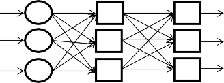
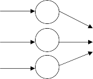

Раздел 1. ИНТЕЛЛЕКТУАЛЬНЫЕ ИНФОРМАЦИОННЫЕ ТЕХНОЛОГИИ
Л. Г. Саетова, аспирант
М. М. Горохов, доктор физико-математических наук, профессор Кафедра «Информационные системы»
Ижевский государственный технический университет имени М. Т. Калашникова
В данной статье рассматривается нейронная сеть как способ построе- ния модели для решения таких задач, как установление зависимости и даль- нейшего прогнозирования. Обычно для установления зависимости в мате- матике применяется метод регрессии, т. е. метод нахождения зависимых переменных от независимых с помощью заданной функции. В нейронной се- ти линейная регрессия находит зависимость между входным и выходным сигналом или данными.
При этом применение нейронной сети для решения задачи регрессии не за- дает конкретный тип нейронной сети, т. е. возможно применение и линейной сети, и многослойного персептрона, и обобщенной регрессионной сети, выбор зависит от решаемой задачи.
В данной статье рассматривается сама нейронная сеть как способ опре- деления зависимости и возможные функции активации, применяемые при ра- боте нейронной сети, такие как ступенчатая, линейная, сигмоидная, гипербо- лический тангенс, функция ReLu.
В статье также представлены этапы построения нейронной сети для решения задач линейной регрессии. Установление зависимости между данны- ми необходимо для их анализа и дальнейшего прогнозирования развития. Таким образом, можно представить линейную регрессию в нейронных сетях как мо- дель, которая помогает продолжить ряд данных, установив зависимость между ними.

© Саетова Л. Г., Горохов М. М., 2021
L. G. Saetova, Post-graduate
M. M. Gorokhov, DSc (Physics and Mathematics), Professor Department of Information Systems
Kalashnikov Izhevsk State Technical University
This article discusses a neural network as a way to build a model for solving prob- lems such as establishing dependence and further forecasting, usually the regression method is used to establish dependence in mathematics, i.e. method of finding depend- ent variables from independent ones using a given function. In a neural network, linear regression finds the relationship between an input and an output signal or data.
At the same time, the use of a neural network for solving the regression problem does not specify a specific type of neural network, i.e. it is possible to use a linear network and a multilayer percept and a generalized regression network, the choice depends on the problem being solved.
This article discusses the neural network itself as a way to determine depend- ence, and possible activation functions used in the operation of a neural network, such as stepwise, linear, sigmoid, hyperbolic tangent, ReLu function.
This article also presents the stages of building a neural network for solving lin- ear regression problems. Establishing a relationship between data is necessary for their analysis and further forecasting of development. Thus, one can imagine linear regression in neural networks as a model that helps to continue a series of data by establishing a relationship between them.
В современном мире сфер применения нейронных сетей большое ко- личество. В науке, экономике и других областях всегда присутствует такая задача, как нахождение связи между данными. Для ее решения обычно применяется модель регрессии. Самая простая из ее видов это линейная регрессия. Цель исследования – рассмотреть нейронную сеть как способ построения регрессионной модели и дальнейшего прогнозирования.
Искусственная нейронная сеть является моделью, состоящей из вы- ходного, входного и скрытого слоев, все слои состоят из простейших элементов нейронов.
Нейронные сети состоят из следующих элементов:
входной сигнал – сигнал, поступающий из внешней среды или другого нейрона, состоит из входных нейронов [1];
весовой коэффициент – определяет значение силы связи между нейронами;
функция активации – зависимость, преображающая входной сигнал;
выходной сигнал – преобразованное значение входного сигнала.
Нейронная сеть может быть однослойной и многослойной в зави- симости от количества нейронных слоев. Однослойная нейронная сеть представляет собой сеть, в которой входной сигнал проходит только через входной слой, напрямую поступая к выходному слою. Много- слойная нейронная сеть представляет собой нейронную сеть, состоя- щую из входного, выходного и промежуточных слоев, т. е. каждый нейрон сгруппирован в слои, которые связаны между собой нейронами [2], т. е. каждый нейрон на одном слое связан с каждым нейроном на другом слое.
Схематичная модель многослойной нейронной сети представлена на рис. 1.
Входной слой
Скрытый слой
Выходной слой

Рис. 1. Вид многослойной нейронной сети
Работа в нейронной сети происходит следующим образом: входной сигнал поступает на входной слой, затем его значения распределяются по весам и поступают на скрытые слои, в которых происходит вычис- ление, и в конце нейроны поступают на выходной слой, формируют выходной вектор [3]. При этом для выбора весовых коэффициентов нейронная сеть должна пройти обучение.
Пусть входной сигнал Xi x1,, xm , а wi w1,, wm – веса
входного сигнала. Тогда математическое выражение нейронной сети можно представить в следующем виде:
y f ui ,
ui wi xi bi ,
i
где bi
порог активации;
f ui
передаточная функция или функция
активации, т. е. функция, которая получает на входе сумму всех произ- ведений весов и сигналов и выдает сигнал на выходе [4].
Можно представить следующую модель нейрона (рис. 2).

x1
w1
x2
w2
xm
wm
y = f(i)
f(ui)
Рис. 2. Математическая модель нейронных сетей
Функция активации является элементом нейронной сети, ее выбор диктуется необходимыми функциональными возможностями нейрон- ной сети. Выделяют следующие функции активации:
Ступенчатая – пороговая функция активации, значение функции сравнивается с пороговым значением [5], т. е. если функция равна еди- нице, то нейрон активирован. Данный вид функции не подходит для классификации, когда классификаторов больше двух, иными словами, функцию можно применять для бинарной классификации.
Линейная – функция, графиком которой является прямая, зна- чение пропорционально аргументу функции [6]. Позволяет соеди- нить несколько нейронов; если активированы больше одного, то выбирается максимальное значение. Можно применять при боль- шом количестве классификаторов. Область определения не ограни- чена, поэтому не применяется, если выходное значение определено интервалом. Недостатком является невозможность применения ме- тода обратного распространения ошибок, т. к. производная функции активации константа и не зависит от входных значений, также дан- ную функцию бессмысленно применять для многослойных нейрон- ных сетей.
Функция имеет следющий вид:
f u au .
Сигмоидная – непрерывная функция, на входе принимает веще- ственные числа, а на выходе дает число [0, 1], где значение ноль гово- рит об отсутствии активации, а единица – о полной активации [7]. Возможно применять для многослойных сетей. Недостатком такой функции является то, что на участках, где функция принимает значе- ния ноля или единицы, градиент будет приближаться к нулю, что озна- чает слабую связь между изменением f(u) от u, т. е. нейронная сеть начинает слабо обучаться или перестает обучаться совсем.
Сигмоидная функция:
f u
1 .
1 eu
Гиперболический тангенс – по свойствам напоминает сигмоид- ную функцию, отличие в том, что данная функция работает на отрезке от минус единицы до единицы.
Функция гиперболического тангенса:
f u
1
1 e2u
1 .
Функция ReLu – выпрямленная линейная функция активации, функция возвращает значение аргумента, если данное значение не от- рицательно, иначе значение функции равняется нулю [8]. Недостатком является ненадежность в процессе обучения, что может привести к не- активности сети, т. е. нейрон выйдет из строя и прекратит обучение.
Функция имеет вид:
f u max max 0; u .
Количество нейронов при применении данной функции в обучении меньшее, чем при применении функций гиперболического тангенса и сигмоидной, соответственно, сеть тоже становится легче.
При обучении нейронной сети происходит процесс корректировки весовых коэффициентов и порогов нейрона, для данного процесса за- дается выборка обучающих данных, в процессе обучения нейронная сеть корректирует ответы, приближая их к верным результатам.
Подход к процессу обучения происходит следующим образом: оце- ниваются обучающие данные нейронной сетью, и задается некоторое
количество из этих данных для определения точности вычислений. За- тем определяется количество нейронов в каждом слое. После этого идет процесс обучения: во входном слое присваиваются значения всем весам, затем вычисляются выходные значения для каждого обучающе- го варианта и их ошибка, так происходит для каждого значения обу- чающей выборки, затем для минимизации ошибки обновляются весы. Обучение завершается, как только достигается заданная точность.
Нейронная сеть является многофункциональным методом прогно- зирования. Так, она может выявлять взаимосвязи между процессами. В математике и статистике для выявления зависимости между данны- ми используется регрессорная зависимость, которая может быть как линейной, так и логистической (нелинейной), которая накладывает ог- раничения значений в виде отрезка от нуля до единицы.
Общую модель решения задачи линейной регрессии в нейронной сети можно представить в следующем виде:
генерируются элементы данных, необходимых для обучения мо- дели;
создается нейронная сеть, содержащая входной, выходной и скрытые слои;
задается функция активации для скрытого слоя;
начинается обучение нейронной сети, т. е. находятся коэффици- енты весов, которые дадут более верные результаты, построенные на известных результатах обучающей выборки;
выдаются выходные значения;
оценивается модель.
В линейной регрессии нейронной сети в большинстве случаев бы- вает несколько входных узлов и один выходной узел.
Линейная модель в нейронных сетях представляет собой сеть, не со- держащую в себе скрытых слоев, и элементы с линейной функцией акти- вации на выходном слое, где выходной сигнал показывает ожидаемое зна- чение модели, в которой учитывается плотность распределения данных.
Таким образом, для применения линейной модели регрессии в ней- ронных сетях нужно загрузить данные, создать модели и приспособить ее к имеющимся уже данным, проверить результат и достоверность модели и применить данную модель для прогнозирования.
Иванова, Ю. В. Нейронные сети и регрессионный анализ как метод про- гнозирования временных рядов / Ю. В. Иванова, Т. В. Черемисова // Academy. – 2017. – № 6 (21). – С. 46–48.
Благодатский, Г. А. Нейронные сети как способ моделирования процес- сов / Г. А. Благодатский, М. М. Горохов, Л. Г. Саетова // Социально-эконо- мическое управление: теория и практика : науч.-практ. журн. – 2020. – № 4. – С. 60–64.
Щенников, В. Н. Сравнение моделей с нейронной сетью и OLS-регрес- сией при построении стратегии управления риском от дохода по индексу / В. Н. Щенников, Е. В. Щенникова, С. А. Санников // Вестник МГУ. – 2017. –
№ 1. – С. 12–20.
Санников, С. А. Нейронные сети в задачах расчета цен опционов фондо- вых рынков // Вестник МГУ. – 2017. – № 1. – С. 21–26.
Ярушев, С. А. Когнитивные гибридные системы поддержки принятия решений и прогнозирования / С. А. Ярушев, А. Н. Аверкин, В. Ю. Павлов // Программные продукты и системы. – 2017. – № 4. – С. 632–642.
Горохов, М. М. Статистические методы анализа и обработки информа- ции: нейронные сети / М. М. Горохов, Л. Г. Саетова // Социально-экономи- ческое управление: теория и практика : науч.-практ. журн. – 2018. – № 4. – С. 192–195.
Мусин, А. Р. Экономико-математическая модель прогнозирования дина- мики финансового рынка // Статистика и экономика. – 2018. – № 4. – URL: https://cyberleninka.ru/article/n/ekonomiko-matematicheskaya-model-prognozirova- niya-dinamiki-finansovogo-rynka (дата обращения: 19.12.2020).
Якупов, Д. Т. Перспективы применения искусственных нейронных сетей для прогнозирования объемов грузоперевозок в транспортных системах / Д. Т. Якупов, О. Н. Рожко // Статистика и экономика. – 2017. – № 5. – С. 49–60.